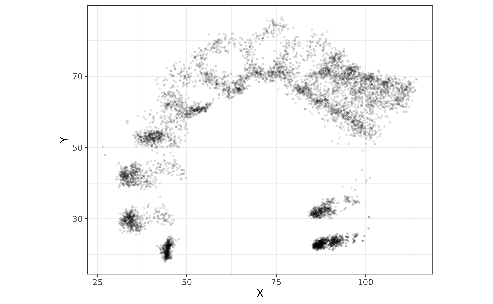
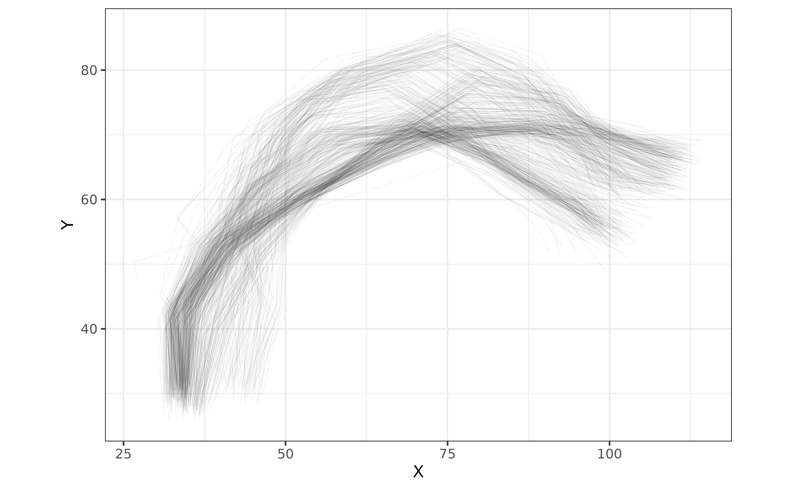
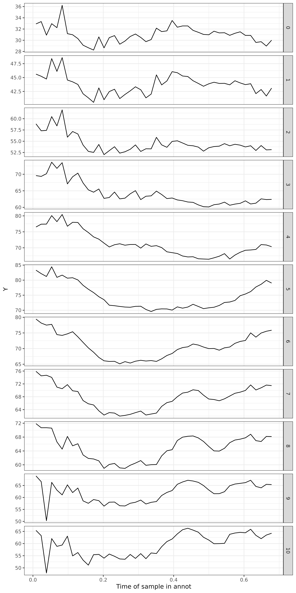

Import and plot UTI and EMA data
Stefano Coretta
2025-02-20
Source:vignettes/tongue-imaging.Rmd
tongue-imaging.RmdThe package rticulate facilitates import in R of the
following data:
Deep Lab Cut (DLC) spline data from Articulate Assistant Advanced™. Paper
.posfiles from the Carstens AG500 electro-magnetic-articulographer.(Legacy) fan-line spline data from Articulate Assistant Advanced™.
To use the package, attach it as usual.
The following sections illustrate how to import the three types of data.
Import DLC spline data from AAA
The read_aaa() function can read DLC spline data
exported from AAA. It assumes that the X/Y coordinates are in the
rightmost columns of the exported data (i.e., when exporting they should
be selected last). We recommend to include a header when exporting DLC
data from AAA for a smooth experience.
The example file we will read can be inspected here. This file contains a header (see the section on importing fan-line spline data below on how to import legacy fan-line data files without a header).
With format = "wide", the file is read as is and a
frame_id index column is added to index each tongue contour
frame (normally, each row in the exported data is one ultrasound
frame).
# system.file() is needed here because the example files reside in the package.
# You can just include the file path directly in read_aaa, like
# read_aaa("~/Desktop/splines.tsv", columns)
file_path <- system.file("extdata", "it01-dlc.tsv", package = "rticulate")
dlc <- read_aaa(file_path, format = "wide")## Rows: 521 Columns: 36
## ── Column specification ────────────────────────────────────────────────────────
## Delimiter: "\t"
## chr (4): Client family name, Date Time of recording, Prompt, Annotation Title
## dbl (32): Time of sample in recording, Time of sample in annot, X0 DLC_Tongu...
##
## ℹ Use `spec()` to retrieve the full column specification for this data.
## ℹ Specify the column types or set `show_col_types = FALSE` to quiet this message.
dlc## # A tibble: 521 × 37
## `Client family name` `Date Time of recording` `Time of sample in recording`
## <chr> <chr> <dbl>
## 1 it01 29/11/2016 15:10:52 0.670
## 2 it01 29/11/2016 15:10:52 0.685
## 3 it01 29/11/2016 15:10:52 0.700
## 4 it01 29/11/2016 15:10:52 0.715
## 5 it01 29/11/2016 15:10:52 0.730
## 6 it01 29/11/2016 15:10:52 0.745
## 7 it01 29/11/2016 15:10:52 0.760
## 8 it01 29/11/2016 15:10:52 0.775
## 9 it01 29/11/2016 15:10:52 0.790
## 10 it01 29/11/2016 15:10:52 0.804
## # ℹ 511 more rows
## # ℹ 34 more variables: `Time of sample in annot` <dbl>, Prompt <chr>,
## # `Annotation Title` <chr>, `X0 DLC_Tongue` <dbl>, `Y0 DLC_Tongue` <dbl>,
## # `X1 DLC_Tongue` <dbl>, `Y1 DLC_Tongue` <dbl>, `X2 DLC_Tongue` <dbl>,
## # `Y2 DLC_Tongue` <dbl>, `X3 DLC_Tongue` <dbl>, `Y3 DLC_Tongue` <dbl>,
## # `X4 DLC_Tongue` <dbl>, `Y4 DLC_Tongue` <dbl>, `X5 DLC_Tongue` <dbl>,
## # `Y5 DLC_Tongue` <dbl>, `X6 DLC_Tongue` <dbl>, `Y6 DLC_Tongue` <dbl>, …For plotting and analysis, it is useful to have the data in a long
format. By default, read_aaa() pivots the data from wide to
long. The resulting tibble has X and Y coordinates for each knot of each
spline in each row. DLC knots are numbered from 0, as they are in the
exported data. A further column, displ_id, indexes a knot
displacement trajectory in time if multiple time points are
exported.
dlc <- read_aaa(file_path)## Rows: 521 Columns: 36
## ── Column specification ────────────────────────────────────────────────────────
## Delimiter: "\t"
## chr (4): Client family name, Date Time of recording, Prompt, Annotation Title
## dbl (32): Time of sample in recording, Time of sample in annot, X0 DLC_Tongu...
##
## ℹ Use `spec()` to retrieve the full column specification for this data.
## ℹ Specify the column types or set `show_col_types = FALSE` to quiet this message.
dlc## # A tibble: 7,815 × 12
## `Client family name` `Date Time of recording` `Time of sample in recording`
## <chr> <chr> <dbl>
## 1 it01 29/11/2016 15:10:52 0.670
## 2 it01 29/11/2016 15:10:52 0.670
## 3 it01 29/11/2016 15:10:52 0.670
## 4 it01 29/11/2016 15:10:52 0.670
## 5 it01 29/11/2016 15:10:52 0.670
## 6 it01 29/11/2016 15:10:52 0.670
## 7 it01 29/11/2016 15:10:52 0.670
## 8 it01 29/11/2016 15:10:52 0.670
## 9 it01 29/11/2016 15:10:52 0.670
## 10 it01 29/11/2016 15:10:52 0.670
## # ℹ 7,805 more rows
## # ℹ 9 more variables: `Time of sample in annot` <dbl>, Prompt <chr>,
## # `Annotation Title` <chr>, knot <dbl>, spline <chr>, X <dbl>, Y <dbl>,
## # frame_id <int>, displ_id <dbl>You can then proceed to plot the data as you would with any other data.
dlc |>
ggplot(aes(X, Y)) +
geom_point(alpha = 0.1, size = 0.5) +
coord_fixed()
To plot tongue contours, use the frame_id column to
group points from the same contour (we need to filter the data to
include only DLC_Tongue data).
dlc |>
filter(spline == "DLC_Tongue") |>
ggplot(aes(X, Y, group = frame_id)) +
geom_path(alpha = 0.1, linewidth = 0.1) +
coord_fixed()
You can also plot the X or Y displacement of the knots along time.
dlc |>
filter(
`Date Time of recording` == "29/11/2016 15:10:52",
spline == "DLC_Tongue"
) |>
ggplot(aes(`Time of sample in annot`, Y, group = displ_id)) +
geom_path() +
facet_grid(rows = vars(knot), scales = "free_y")
Check out vignette("kinematics", package = "rticulate")
and vignette("filter-signals", package = "rticulate").
Import .pos files from the Carstens AG500 EMA
You can import binary .pos files from the Carstens AG500
electro-magnetic articulographer using the read_ag500_pos()
function. In most contexts, the defaults of the function will suffice.
Due to CRAN not accepting binary files, the following code is not run,
but you can test it by downloading the .pos file provided
here: https://github.com/stefanocoretta/rticulate/blob/vignettes/data-raw/ema/0025.pos.
ema <- read_ag500_pos("0025.pos")You can plot the antero-posterior and vertical displacement of a sensor (here the tongue tip sensor, channel 5).
ema |>
filter(chn == 5) |>
ggplot(aes(x, z)) +
geom_point(size = 0.1)Or, for example, just the vertical displacement along time.
ema |>
filter(chn == 5) |>
ggplot(aes(time, z)) +
geom_point(size = 0.1)(LEGACY) Import fan-line spline data from AAA
The function read_aaa() can import legacy fan-line
spline data from AAA and transform it into a longer format (where each
observation is a point on a fan line and the coordinates values are two
variables, X and Y, see ?tongue
for more details).
The following code will show how to import a file without the header that has legacy fan-line spline data. You can inspect the file we will read here. The X/Y coordinates are stored in the rightmost columns.
When the file does not contain a header like in this case, you must create a vector with the column names for all columns except the X/Y coordinates columns.
columns <- c(
"speaker",
"seconds",
"rec_date",
"prompt",
"label",
"TT_displacement",
"TT_velocity",
"TT_abs_velocity",
"TD_displacement",
"TD_velocity",
"TD_abs_velocity"
)Now we can use read_aaa() to import the spline data as a
tibble. The function requires a string with the file path and name, and
a vector with the names of the columns. It is necessary to specify the
number of fan lines with the fan_lines argument.
# system.file() is needed here because the example files reside in the package.
# You can just include the file path directly in read_aaa, like
# read_aaa("~/Desktop/splines.tsv", columns)
file_path <- system.file("extdata", "it01.tsv", package = "rticulate")
tongue <- read_aaa(file_path, fan_lines = 42, column_names = columns)## Rows: 11 Columns: 95
## ── Column specification ────────────────────────────────────────────────────────
## Delimiter: "\t"
## chr (4): speaker, rec_date, prompt, label
## dbl (91): seconds, TT_displacement, TT_velocity, TT_abs_velocity, TD_displac...
##
## ℹ Use `spec()` to retrieve the full column specification for this data.
## ℹ Specify the column types or set `show_col_types = FALSE` to quiet this message.
## ! Column `Date Time of recording` not found. Did not create a `displ_id` column.
## We recommend to include `Date Time of recording` when exporting data from AAA.To check the head of the tibble, just do:
tongue## # A tibble: 462 × 16
## speaker seconds rec_date prompt label TT_displacement TT_velocity
## <chr> <dbl> <chr> <chr> <chr> <dbl> <dbl>
## 1 it01 1.20 29/11/2016 15:11:03 Dico p… max_… 77.9 -7.73
## 2 it01 1.20 29/11/2016 15:11:03 Dico p… max_… 77.9 -7.73
## 3 it01 1.20 29/11/2016 15:11:03 Dico p… max_… 77.9 -7.73
## 4 it01 1.20 29/11/2016 15:11:03 Dico p… max_… 77.9 -7.73
## 5 it01 1.20 29/11/2016 15:11:03 Dico p… max_… 77.9 -7.73
## 6 it01 1.20 29/11/2016 15:11:03 Dico p… max_… 77.9 -7.73
## 7 it01 1.20 29/11/2016 15:11:03 Dico p… max_… 77.9 -7.73
## 8 it01 1.20 29/11/2016 15:11:03 Dico p… max_… 77.9 -7.73
## 9 it01 1.20 29/11/2016 15:11:03 Dico p… max_… 77.9 -7.73
## 10 it01 1.20 29/11/2016 15:11:03 Dico p… max_… 77.9 -7.73
## # ℹ 452 more rows
## # ℹ 9 more variables: TT_abs_velocity <dbl>, TD_displacement <dbl>,
## # TD_velocity <dbl>, TD_abs_velocity <dbl>, knot <dbl>, spline <chr>,
## # X <dbl>, Y <dbl>, frame_id <int>Sometimes is useful to add extra information for each prompt (like
vowel, consonant place, phonation, etc.). We can do so by using
functions from the dplyr package (word() is
from the stringr package).
stimuli <- read_csv(system.file("extdata", "stimuli.csv", package = "rticulate"))## Rows: 12 Columns: 11
## ── Column specification ────────────────────────────────────────────────────────
## Delimiter: ","
## chr (10): word, ipa, c1, c1_phonation, vowel, anteropost, height, c2, c2_pho...
## dbl (1): item
##
## ℹ Use `spec()` to retrieve the full column specification for this data.
## ℹ Specify the column types or set `show_col_types = FALSE` to quiet this message.
tongue <- mutate(tongue, word = word(prompt, 2)) %>%
left_join(y = stimuli) %>%
mutate_if(is.character, as.factor)## Joining with `by = join_by(word)`Let’s check tongue again.
tongue## # A tibble: 462 × 27
## speaker seconds rec_date prompt label TT_displacement TT_velocity
## <fct> <dbl> <fct> <fct> <fct> <dbl> <dbl>
## 1 it01 1.20 29/11/2016 15:11:03 Dico p… max_… 77.9 -7.73
## 2 it01 1.20 29/11/2016 15:11:03 Dico p… max_… 77.9 -7.73
## 3 it01 1.20 29/11/2016 15:11:03 Dico p… max_… 77.9 -7.73
## 4 it01 1.20 29/11/2016 15:11:03 Dico p… max_… 77.9 -7.73
## 5 it01 1.20 29/11/2016 15:11:03 Dico p… max_… 77.9 -7.73
## 6 it01 1.20 29/11/2016 15:11:03 Dico p… max_… 77.9 -7.73
## 7 it01 1.20 29/11/2016 15:11:03 Dico p… max_… 77.9 -7.73
## 8 it01 1.20 29/11/2016 15:11:03 Dico p… max_… 77.9 -7.73
## 9 it01 1.20 29/11/2016 15:11:03 Dico p… max_… 77.9 -7.73
## 10 it01 1.20 29/11/2016 15:11:03 Dico p… max_… 77.9 -7.73
## # ℹ 452 more rows
## # ℹ 20 more variables: TT_abs_velocity <dbl>, TD_displacement <dbl>,
## # TD_velocity <dbl>, TD_abs_velocity <dbl>, knot <dbl>, spline <fct>,
## # X <dbl>, Y <dbl>, frame_id <int>, word <fct>, item <dbl>, ipa <fct>,
## # c1 <fct>, c1_phonation <fct>, vowel <fct>, anteropost <fct>, height <fct>,
## # c2 <fct>, c2_phonation <fct>, c2_place <fct>Import multiple files
To import multiple files with AAA data, simply use a list of paths
with read_aaa, for example using
list.files.
tongue2 <- list.files(
path = system.file("extdata", package = "rticulate"),
pattern = "*\\d{2}.tsv",
full.names = TRUE
) %>%
read_aaa(., fan_lines = 42, column_names = columns)## Rows: 11 Columns: 95
## ── Column specification ────────────────────────────────────────────────────────
## Delimiter: "\t"
## chr (4): speaker, rec_date, prompt, label
## dbl (91): seconds, TT_displacement, TT_velocity, TT_abs_velocity, TD_displac...
##
## ℹ Use `spec()` to retrieve the full column specification for this data.
## ℹ Specify the column types or set `show_col_types = FALSE` to quiet this message.
## ! Column `Date Time of recording` not found. Did not create a `displ_id` column.
## We recommend to include `Date Time of recording` when exporting data from AAA.
##
## Rows: 8 Columns: 95
## ── Column specification ────────────────────────────────────────────────────────
## Delimiter: "\t"
## chr (4): speaker, rec_date, prompt, label
## dbl (91): seconds, TT_displacement, TT_velocity, TT_abs_velocity, TD_displac...
##
## ℹ Use `spec()` to retrieve the full column specification for this data.
## ℹ Specify the column types or set `show_col_types = FALSE` to quiet this message.
## ! Column `Date Time of recording` not found. Did not create a `displ_id` column.
## We recommend to include `Date Time of recording` when exporting data from AAA.